OR 48 inch Texas part one
OR: April observing with a 48-inch in Texas (Part I) by Steve Gottlieb
Last week (April 16-19), Howard Banich (from Portland) and I flew to El Paso on Thursday and drove out to visit and observe up to 4 nights with Jimi Lowrey, in the remote Davis Mountains of West Texas (next door to the site of the Texas Star Party). We were excited, of course, to see the spring skies through Jimi's mighty scope -- a custom 48-inch f/4 Dobsonian on steroids built by OMI that he calls "Barbarella". The mirror is Astro-Sitall, an ultra-low expansion glass ceramic, figured by LOMO in Russia and the drive is a custom-built Servocat with a standard Argo-Navis. Jimi drives the scope by computer using Megastar.
The weather looked quite unpromising as we flew over New Mexico and into Texas but I knew the Davis Mountains often blocks incoming systems (or creates its own bad weather). After we had dinner (and watched a couple of foxes munch on leftovers on Jimi's front porch) the skies were surprisingly clear. Eventually, clouds did reach his observatory -- as well as wind -- but we stuck it out all night, observing until nearly 5:00 AM. The seeing started off fairly good, but was soft in the morning, which affected some of the observations. Nevertheless, I took notes on over 50 objects the first night! These are some of the highlights (another report or two to come from the following nights!)
-- Steve Gottlieb
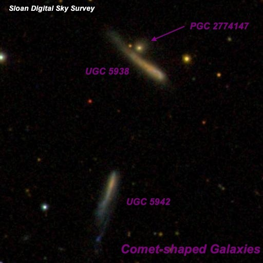
Charles Messier compiled his famous list of 103 "Nebulae" to provide comet hunters a reference so these objects were not confused with comets. Here we have two galaxies that actually mimic comets with brighter tips and and thin tails that fades at the ends! Fritz Zwicky called this pair "Two blue post-eruptive jet-like galaxies (separation 95 arcsec [north-south]) with compact knots and compact companion of S-component."
In the 48", UGC 5938 appeared faint, moderately large, fairly low surface brightness streak, 30"x5" SW-NE. This galaxy is brighter at the southwest end - not in the center. A mag 16 star lies 30" W. I also noted an extremely faint star at the northeast end, but on checking the SDSS it turns out this is a very compact galaxy ( PGC 2774147 = 2MASX J10515293+7734355, V = 17.0). UGC 5938 forms a 1.2' pair to the south-southeast with superthin UGC 5942 (FGC 134A). At 488x it was very faint, moderately large, low surface brightness, thin edge-on streak, 0.8'x0.1' NNW-SSE. Slightly brighter at the NNW end.
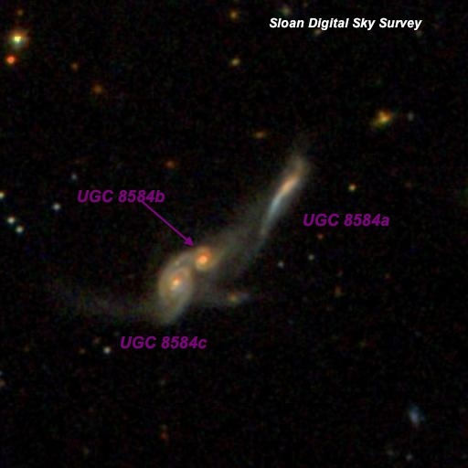
UGC 8584 - Interacting Triple System 13 36 13.4 -01 02 09 Size: 1.2'x0.3' Mag: 16.5B, 16.6B, 16.7B
Here's a little-known cosmic trainwreck. Three galaxies are in throes of a major collision, with tidal plumes and tails thrown around The entire system is known as UGC 8584 -- the question is how did Arp and Vorontsov-Velyaminov miss it compiling their catalogues of Peculiar and Interacting galaxies?
Using 610x and 813, this trio was a fascinating sight in the 48-inch. The very close pair forms a M51 -type system. The larger galaxy, UGC 8584c, is fairly faint, fairly small, elongated 3:2 UGC 8584a is ~40" northwest of the tight pair and appeared fairly faint, fairly small, very elongated 3:1, ~18"x6".
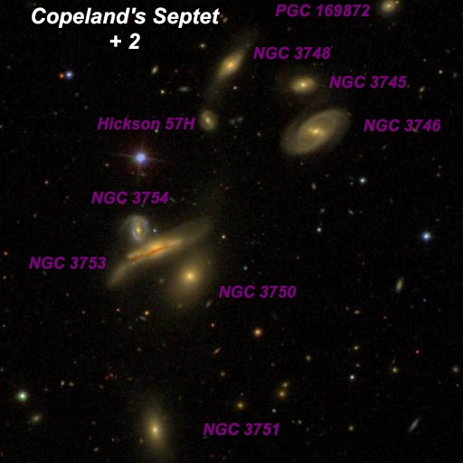
Ralph Copeland discovered this group on 9 Feb 1874 while an assistant on Lord Rosse's 72-inch Leviathan at Birr Castle. He found this group while searching in vain for NGC 3760 , discovered by Heinrich d'Arrest and assumed to be in the general location. But d'Arrest had made a 1-hour error in RA, so his object was not to be found. But Copeland his famous Septet instead, which happened to be just west of d'Arrest's erroneous position.
Due to a mixup in the reference star, though, the NGC positions for Copeland's Septet were offset 1.5 minutes in RA and 16' in Declination. The this error was caught and corrected a few years later, the authors of the RNGC found nothing at the NGC position and misclassified the entire Septet as nonexistent!
A 16-inch will reveal the main 7 galaxies with NGC designations and I've observed the group previously with my 18-inch scope several times. But they all appear very faint in this size aperture. In the 48-inch, these are all obvious direct vision galaxies with small bright cores that I would call "moderately bright". This compact group also goes by the name Hickson 57 , and Paul Hickson added an 8th member - HCG 57H . In the 48-inch it was easily visible less than 1' SSE of NGC 3748 as a fairly faint round glow about 12" diameter. Finally, a 9th galaxy, PGC 169872 , is off the northwest end. Although Hickson skipped this object it has the same redshift as the other members, so is certainly a group member. It also appeared fairly faint, round, 15" diameter.
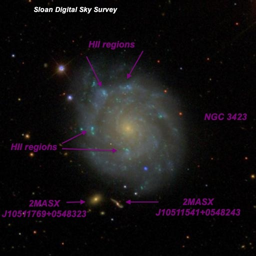
NGC 3423 10 51 14.3 +05 50 24 Size: 3.8' x 3.2' Mag: V = 11.1, B = 11.6
This beautiful face-on galaxy is a William Herschel discovery (H. IV 6) on Feb 23, 1784. A couple of the HII regions -- sites of vigorous star formation -- were first noted by the observers on Lord Rosse's 72-inch. In 1851, it was noted "2 knots [HII regions] on the north side." These are arrowed on the SDSS image above. In Jimi's 48-inch, a couple of additional HII regions were visible along with two galaxies just off the south side of the galaxy.
At 488x, it appeared very bright, large, slightly elongated SW-NE, ~3'x2.5', large bright core. A mag 15.8 star is superimposed on the SSW side, 1.2' from center. Spiral structure is evident at 488x, particularly along a curving outer arm running from clockwise from east to north. This arm contains three HII knots.
An obvious faint knot, 8"-10" diameter, is at the north end 1.1' from center. The brightest knot is at the northeast end of the halo 1.1' from center, and it appeared fairly faint/faint, round, 12" diameter. The faintest knot ( SDSS J105118.10+055024.7 ) is directly east of center by 1.0' and noted as very faint, round, 6" diameter. In addition to these three, a 4th knot is due south of center by 0.6'. This HII region was very faint, round, 8" diameter.
Two additional objects were seen just off the south side of NGC 3423, but these are separate galaxies. 2MASX J10511769+0548323, situated 2.0' SE of the center, is fairly faint to moderately bright (V = 15.7), small, round, moderate surface brightness, 15" diameter. 2MASX J10511769+0548323, 2.0' S of center, is very faint (V = 17.1), very small, ~9"x6" SW-NE. This latter galaxy has a redshift of z = .069 and lies far in the background at a light-travel time of ~920 million years.
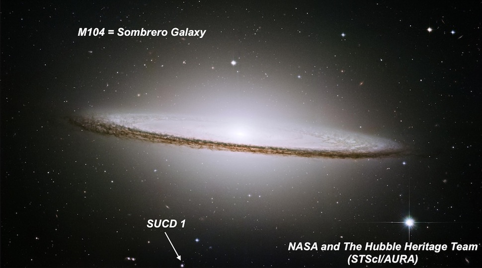
Sombrero ( M104 ) UCD 1 12 40 03.1 -11 40 04 Size: 2" (that's 2 arc seconds) Mag: V = 17.5, B = 18.4
The main object in this image is the famous Sombrero Galaxy. But what is the star-like object labeled SUCD 1? It's Sombrero Ultra-Compact 1, probably a former dwarf galaxy that wandered too close to M104 and had it's halo of star stripped from its gravitational grasp. What remains is the nucleus of the former galaxy. Omega Centauri, in our own Milky Way, may be such an object. This one is unusually bright -- if you call mag 17.5 bright. It's also possible that this object is a unusually massive metal-rich globular cluster. I've previously seen several UCD's in the 48-inch, including a couple in M87 .
At 610x, SUCD 1 was an easily visible faint "star" (V = 17.5) just 10" northeast of a brighter mag 16.5-17 star . In moments of sharp seeing, this Ultra Compact Dwarf stayed slightly soft (non-stellar), with a diameter of perhaps 2". SUCD 1 is located just 2.6' SSE of the center of M104 and 35" SSE of a mag 15-15.5 star.
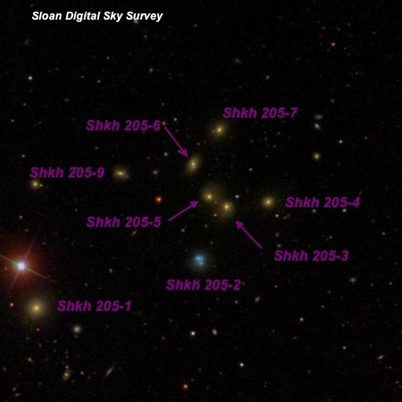
Shakhbazian 205 12 35 19 +27 34 40 Size: 2.6' (total)
Armenian astronomer Romela Shakhbazian compiled this catalogue of compact groups of compact galaxies. The 8 labeled galaxies comprise Shkh 205, which resides at a mind-boggling distance of 1.25 billion light-years. On the sky, the main members (Shkh 205-1 is a foreground galaxy) are packed into 2.6' of sky, so high power is necessary to bust them apart. At 488x and 613x; 205-1 appeared fairly faint, small, 15" diameter. This galaxy is the brightest of the 8 members of Shkh 205 viewed, although its redshift is only 1/2 of the other members. It forms the southwest vertex of a small triangle with a mag 11.5 star 0.8' NNE and a mag 10.5 star 1.6' E. The main clump of galaxies in Shkh 205 is ~3.5' northwest.
Five of the galaxies (Shkh 205-3/4/5/6/7) form a semicircle of diameter 1.5' open to the west. All of these are extremely to very faint, round, ~8" diameter. Shkh 205-9 ("extremely faint and small, round, 8" diameter") and Shkh 205-2 ("faint, small, slightly elongated, 12"x8") about 1.5' east and southeast form an outline mimicking the Crater constellation, as noted by Alvin Huey. Shkh 205-2 is a strange looking blue object with multiple knots -- perhaps it's a foreground object? In any case, these 7 galaxies fit in a 2.6' circle! The redshift based light-travel time is 1.25 billion years.
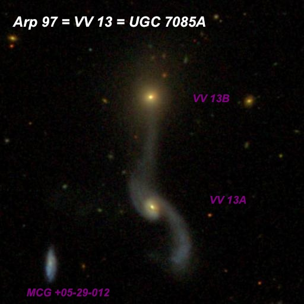
Arp 97 = VV 13 = UGC 7085A 12 05 45.5 +31 04 08 Size: 2.6 'x 1.0' (total) Mag: V = 14.1, B = 14.8
Arp 97 is an interacting pair of galaxies with tails and a bridges. Arp placed it in the category of "Spiral galaxies with (elliptical) companion on arms". His image with 200" on Mount Palomar is at http://ned.ipac.caltech.edu/level5/Arp/Figures/big_arp97.jpeg. Another fascinating group of galaxies -- KTG 41 (triplet) = Rose 8 (quartet) lies 15' northwest!
At 488x; VV 13A = MCG +05-29-011, the southern component, appeared moderately bright, fairly small, round, bright core increases to the center, fairly low surface brightness halo. A very faint tidal tail stretches south off the west side of the galaxy. VV 13B = MCG +05-29-010, 1.2' due north, appeared fairly faint to moderately bright, small, round, 18" diameter. A bridge connecting the pair was highly suspected as faint haze between the pair, but it was difficult to confirm as the seeing was quite soft. The galaxy to the lower left in the SDSS image above (1.5' SE) lies at a similar distance as Arp 97, but shows no obvious signs of interacting. At mag 16.4V, it appeared fairly faint, elongated 2:1 N-S, 20"x10", even surface brightness.
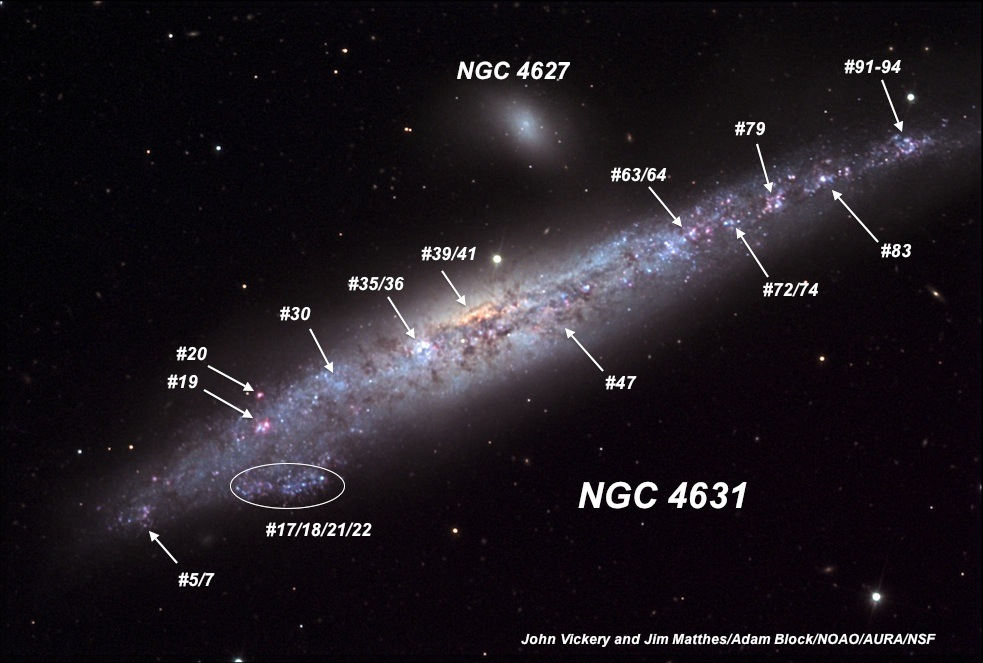
NGC 4631 12 42 06.5 +32 32 24 Size: 15.5' x 2.7' Mag: 9.2V, 9.8B
This is one of my favorite galaxies not in the Messier list and is stunning in virtually any scope from a dark location. The galaxy is riddled with bright and dark mottling across the surface -- regions of active star formation and dark veins of dust. Much of the detail described below can be seen in a 16-inch scope with a bit of effort.
Although I've viewed NGC 4631 a few previous times in the 48-inch, it's difficult to take notes as the amount of structure is so overwhelming. At 375x with a 13mm Ethos (16' field), the galaxy stretches across nearly the entire field and consists of numerous bright luminous patches and irregular dark patches. The overall shape is nonsymmetric; gradually tapering down to nearly a point on the west end, bulging in the center and broader along the eastern side, only narrowing significantly near the very tip.
A mag 13.5-14 star is just north of the western tip. A relatively bright knot (NGC 4631:[HK83]#91-94, from Hodge and Kennicutt's 1983 "An Atlas of H II regions in 125 galaxies") lies 0.6' SE of this star and 5.8' W of center. Several obvious bright knots and splotchy regions line the western side of galaxy: #83 is 4.6' W of center, #79 is 3.9' W of center, #72/74 (fainter spot) is 3.2' W of center, #63/64 (bright region) is 2.2' W of center.
A mag 12.5 star is at the north edge near the geometric center. Ther is no obvious core to the galaxy, though several bright patches are near the center. #47 is a luminous patch 1' S of the mag 12.5 star and #39/41 is a very bright patch 1.5' ESE of the star. Additional HII patches are line up on the east side, mostly along the northern edge of the galaxy. #33-36 is a large bright patch (star cloud?) 2.4' ENE of center and #19/20 is a smaller knot 3.2' E of center. The galaxy bulges out (star association?) on the south side, near the eastern end (3.3' from center) and contains #17/18/21/22. The dusty eastern tip of the galaxy has a very faint HII knot (#5-7).
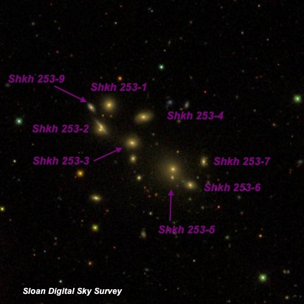
Shakhbazian 253 13 52 24 +37 31 14 Size: 2.2' for the entire group! Mag: Blue magnitudes range from 17.7 to 18.0
This remarkable cluster packs eight 16th and 17th magnitude galaxies into a 2.2' by 0.5' region extended from SW to NE. At 488x, four of the 16th magnitude galaxies (Shkh 253-1/2/3/4) form a near perfect rectangle with sides of 35"x24". Shkh 253-9, a 17th magnitude galaxy, is at the east end of the rectangle. Another three (Shkh 253-5/6/7) form a very small triangle just 1.5' SW of the rectangle. Their redshift (z = .073) based light-travel time is 974 million years. Relatively bright UGC 8795 lies ~5' ESE (not in the image above) and logged as moderately bright, fairly large, very elongated 7:2 N-S, ~0.9'x0.25'.
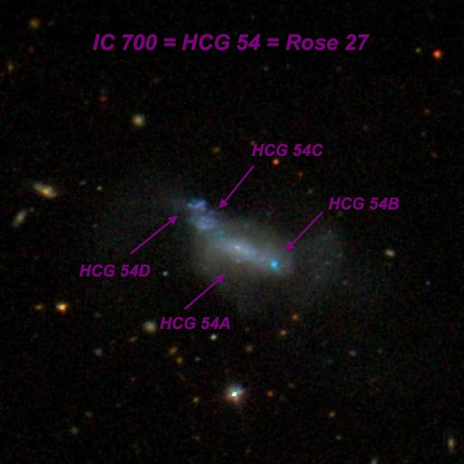
IC 700 = HCG 54 = Rose 27 11 29 15.3 +20 35 00 Size: 1.0' x 0.5' Mag: V = 13.0
On this SDSS image, IC 700 looks similar as a single dwarf irregular galaxy (Magellanic type) with several large star forming regions at the northeast end and a diffuse tidal tail to the west. But it's catalogued as a quartet by Hickson and Rose. Perhaps it started off as two or three galaxies, but is now in the process of merging to create the current mess.
At 610x, the main (central) component of HCG 54 = Rose 27 appeared moderately bright and large, elongated 5:3 WSW-ENE, ~30"x18", fairly even surface brightness. The three fainter components flank HCG 54A and together nearly merge to create an irregular extended glow ~50"x18", bending to the north on the east end. HCG 54B , at the southwest end, is faint to fairly faint (B = 16.2), very small, round, ~8"-10" diameter. This is the second brightest of the 4 members. On the SDSS, HCG 54B appears as a very compact, bright blue knot just 15" SW of center of IC 700. HCG 54C was easily seen as a faint (B = 17.2), small, round, 10" knot. HCG 54C is squeezed between fainter HCG 54D and HCG 54A (18" NE of the center of HCG 54A). HCG 54D was not noticed at 613x. At 813x it appeared very faint (B = 18.5), round, only a 6" knot. HCG 54D is the faintest member of the quartet and sits at the northeast end of the chain.
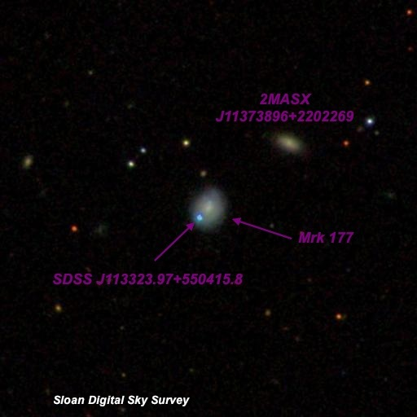
Markarian 177 and SDSS J113323.97+550415.8 11 33 23.5 +55 04 20 Size: 0.35'x0.3' Mag: 15.5V (main galaxy), 16.5V (blue knot)
Mrk (Markarian) 177 is a relatively nearby dwarf galaxy with an AGN (active galactic nucleus) and a very unusual blue object at the southeast end. This enigmatic "star" exhibits broad emission lines and strong variability. It is possibly a luminous blue variable star (LBV) that has been erupting for decades since 1950, followed by a Type IIn supernova in 2001. If that's the case, the multidecade LBV eruptions are the longest ever observed. It has also been speculated that Mrk 177 once contained a double black hole, and the blue object is a former black hole that was ejected from the nucleus of Mrk 177!
Whatever it is, we weren't sure what to expect or even if it was a visual object. At 610x, Mrk 177 appeared fairly faint, small, round, 12" diameter, moderate surface brightness, gradually brightens to the center but no zones. SDSS J113323.97+550415.8 was visible as an extremely faint "star" at the southeast end [just 6" from center] of the galaxy.
It's an amazing universe!